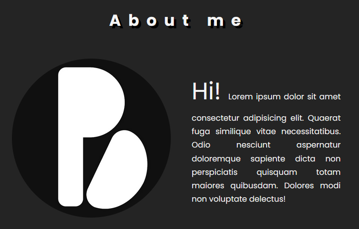
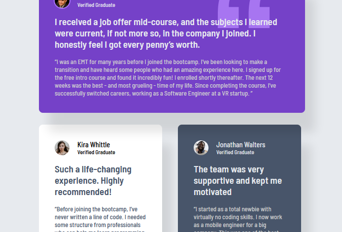
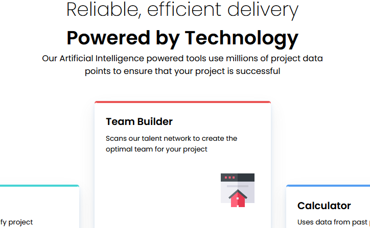

About me
Hi! I am a beginner web developer focused on learning
front-end fundamentals. I build small projects to
understand how layouts work, how interfaces behave, and how code turns ideas into functional websites.
This portfolio documents my learning process and projects as I continue to develop my skills step by
step.
Do you use vibe-coding?
No, but I don’t judge. Using LLMs as a tool for beginner development can be great: you can treat
them as a free private teacher. But for them to truly act as a “teacher,” you need to ask questions
and genuinely try to understand your difficulties and how to solve problems together. Copying and
pasting code isn’t coding, and it isn’t learning how to code.
I understand that it can be frustrating, and that sometimes it feels like our projects would be
better or cleaner if an AI did the work. But in that case, you would be missing the beauty of
learning. You have to start by doing messy, imperfect things in order to learn how to do great ones.
Projects
Personal Page

This project is a personal webpage built to practice semantic HTML
and CSS, with a focus on layout using Grid and Flexbox. It explores spacing, typography, and responsive
behavior through hands-on experimentation.
Testimonials Page

A grid with five testimonial cards, using color and positioning to
create visual hierarchy. Includes a smooth light/dark theme toggle and semantic structure.
Four Card Section Page

A four-card layout built with CSS Grid and Flexbox, featuring a
light/dark theme toggle in JavaScript. Focus on responsive design and clear typography.
Socials